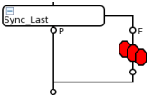

SmartCalc recommendations
Consider these general recommendations to ensure optimal performance of the SMC framework.
The following topics are covered:
|
Examples: |
Exception handling
Exception handling of external functions called from within the SMC_backgroundProcessing() method have to be implemented manually. This is because all exceptions unknown to the SMC_backgroundProcessing() method will cause the SIGABRT signal and termination of the test method process.
Therefore an exception of an external function has to be caught and always be re-thrown to the catch() block in the calling SMC_backgroundProcessing() method by throw().
For an example, refer to Exception handling below.
Hide analog and digital data upload
It is possible to upload digital capture information to the workstation, while the next test already performs another digital or analog capture test.
Both, analog and digital data upload can be hidden behind these APIs:
Use the multibin feature
Multibins are required when using Smartcalc to correctly bin a DUT.
|
 |
For details, see Use of multibins. For using multibins in combination with SmartCalc, refer to Use of SMC_TEST() with multibin and Use of TESTSET and SMC_TEST() test suites with multibin. |
To ensure a correct termination of SmartCalc, the Special test suite bin_disconnect should always be executed after the binning, see Terminate SmartCalc threads after binning.
Passing data to the background process
- Avoid passing large structures by value
- Ensure not to pass large structures by value to your SMC_backgroundProcessing() method as the time needed to copy the parameters would negatively impact the performance of SMC_ARM().
- Avoid passing parameters as reference
-
The content of the variable is actually copied except for references created with
boost::ref(). However in the latter case the allocated memory of the run() function variables will be freed up after execution (and possibly before the memory is accessed by the SmartCalc background function). - Avoid using static variables in the SMC_backgroundProcessing() method
- Static variables are not thread safe and could cause problems in your code. SMC_SERIAL_EXECUTION_BEGIN() / SMC_SERIAL_EXECUTION_END() APIs forces the code within the block to be executed serially. This way modification of a static variable will have no effect on other running threads.
- Define structures and parameters as class members
- This makes them visible for both methods run() and SMC_backgroundProcessing() throughout the whole test flow execution while being fast and providing proper memory access.
- Avoid modification of member variables during test
Member variables of the test method class that are used in a background process must not be changed while the background process is running. If you read and write commonly accessible variables in a multi-thread environment you need to guard them with a mutual exclusion (mutex).
This restriction also applies to test method parameters defined in the initialize() function of a test method class and assigned to member variables of the class: SmarTest initializes these parameters for each execution of the run() function to ensure that the conditions are the same for all sites. Although the memory address of this parameters remains valid during the entire access by SmarTest, simultaneous read access by a background process can result in the read data being invalid.CAUTION Parallel access to member variables of a test method class through the run() function and a background process may result in invalid data or in a crash of the test method and is therefore not allowed.
Using SmartCalc with result areas
A result area only holds the results from one functional, capture, or DC test. The most recent test overwrites all previous results.
Before you re-use a result area in a testflow use SMC_SYNCHRONIZE() to upload all results. For semi-parallel execution, ensure that you allocate individual result areas for each semi-parallel group execution. If you would use only a single result area for all groups SmarTest will only hold the results from the last group.
Synchronize a test flow with any use model
Background threads of SmartCalc can be implemented as "thread per site" or as "common thread" (also known as "single thread"). To properly synchronize a test flow with both implementations and also a mixture of both, you must use a combination of APIs SMC_SYNCHRONIZE() and SMC_SYNCHRONIZE_WITHOUT_BINNING() in your synchronizing test suite:
virtual void run()
{
ON_FIRST_INVOCATION_BEGIN()
{
SMC_SYNCHRONIZE_WITHOUT_BINNING(0,true);
}
ON_FIRST_INVOCATION_END();
SMC_SYNCHRONIZE();
return;
}
SMC_SYNCHRONIZE_WITHOUT_BINNING() in the ON_FIRST_INVOCATION waits for the end of the execution of all threads. SMC_SYNCHRONIZE() executes the queued SMC_TEST() statements to perform the data logging and binning for all active sites. See also test method SMC__SYNCHRONIZE_ALL of the smartCalc test method library.
TMLimits within the SMC framework
If you use TMLimits within the SMC framework together with background processing (as described in Four-step SmartCalc implementation), the following rules must be observed:
- The functions getLimit(), getLimitRef(), and getLimitObj() for retrieving data from the TMLimits table are threadsafe.
- Ensure that the TMLimits table is loaded into the memory before calling SMC_ARM(), for
example:
tmLimits.load("tmuVerify_limits.csv"); SMC_ARM(XXX); - Ensure that all required settings are done before an SMC background process is armed.
Example
Exception handling
The following example shows how a customized exception handling can be coded in the SMC_backgroundProcessing() method using catch().
void SMC_backgroundProcessing()
{
...
try
{
...
call my_function_that_throws();
...
}
catch(myException& e)
{
//
// Always catch user-defined exceptions
// and do what is needed in this specific error.
...
}
...
}
class myException {};
void my_function_that_throws()
{
if (...)
{
throw myException();
}
}Functional changes
- Introduced in SmarTest 6.5.3
- SmarTest 7.1.4: The Wave class has been made thread safe.